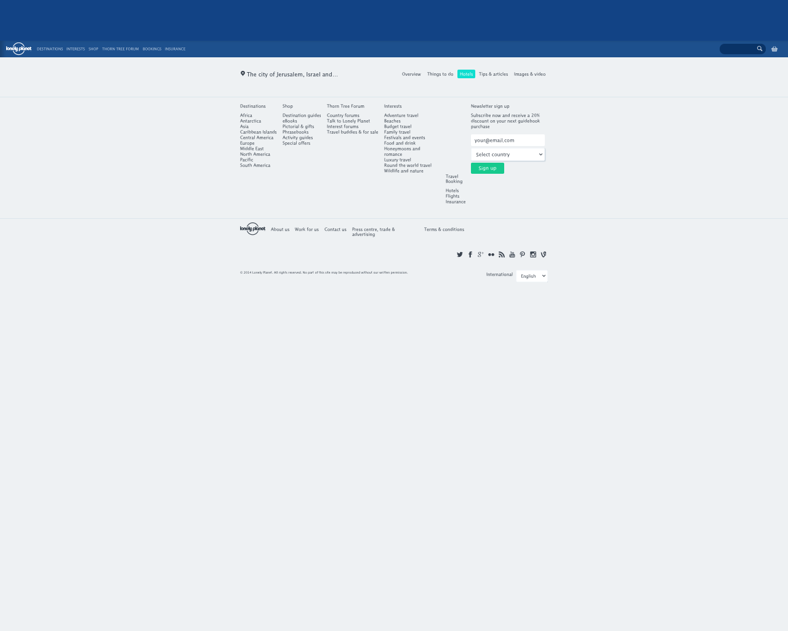

Stats for http://rizzo.lonelyplanet.com/responsive
Page Weight
bodySize
Show descriptionsize of the uncompressed content of all responsesShow warningUnfortunately this metric is not reliable. For more information please check documentation of phantomas.Date bodySize- bytes 2014-06-13T11:43:21.882Z 1159212 2014-06-13T11:43:34.739Z 1170289 2014-06-13T11:43:46.105Z 1104276 cssSize
Show descriptionsize of CSS responsesShow warningUnfortunately this metric is not reliable. For more information please check documentation of phantomas.Date cssSize- bytes 2014-06-13T11:43:21.882Z 1052348 2014-06-13T11:43:34.739Z 1052348 2014-06-13T11:43:46.105Z 990045 jsSize
Show descriptionsize of JS responsesShow warningUnfortunately this metric is not reliable. For more information please check documentation of phantomas.Date jsSize- bytes 2014-06-13T11:43:21.882Z 67478 2014-06-13T11:43:34.739Z 67478 2014-06-13T11:43:46.105Z 67478 imageSize
Show descriptionsize of image responsesShow warningUnfortunately this metric is not reliable. For more information please check documentation of phantomas.Date imageSize- bytes 2014-06-13T11:43:21.882Z 70 2014-06-13T11:43:34.739Z 70 2014-06-13T11:43:46.105Z 70
Last run film strip for http://rizzo.lonelyplanet.com/responsive
 21ms
21ms- 7938ms
 8190ms
8190ms- 9206ms
Last run offenders for http://rizzo.lonelyplanet.com/responsive
- htmlCount
- http://rizzo.lonelyplanet.com/responsive (49.21 kB)
- jsCount
- http://assets.staticlp.com/analytics/analytics.min.js (8.44 kB)
- http://tcr.tynt.com/ti.js (33.61 kB)
- http://www.google-analytics.com/analytics.js (23.83 kB)
- http://sc.tynt.com/script/sc/dSm5i4oRer4BQKacwqm_6l.js (0.02 kB)
- http://de.tynt.com/deb/v2?id=dSm5i4oRer4BQKacwqm_6l&r= (0.00 kB)
- http://www.google-analytics.com/analytics.js (13.01 kB)
- http://tcr.tynt.com/ti.js (33.61 kB)
- cacheHits
- http://assets.staticlp.com/analytics/analytics.min.js
- http://assets.staticlp.com/assets/common_core_no_font-12b193a6f285068a65e7869e46b6ac33.css
- http://assets.staticlp.com/assets/fonts-bb1184619f82b7e92b89a0b2ce5eacd7.css
- http://www.google-analytics.com/analytics.js
- http://assets.staticlp.com/assets/icons/active-b4774d6fb5c6bbb197f0d585b253fdc9.css
- http://www.google-analytics.com/collect?v=1&_v=j22&a=1479099303&t=pageview&_s=1&dl=http%3A%2F%2Frizzo.lonelyplanet.com%2Fresponsive&ul=en-gb&de=UTF-8&dt=Lonely%20Planet%20Travel%20Guides%20and%20Travel%20Information&sd=32-bit&sr=2560x1440&vp=2560x2048&je=0&_u=MEAAAAQ~&cid=1091208815.1402659837&tid=UA-11222786-2&z=1324054514
- http://www.google-analytics.com/collect?v=1&_v=j22&a=452343527&t=pageview&_s=1&dl=http%3A%2F%2Frizzo.lonelyplanet.com%2Fresponsive&ul=en-gb&de=UTF-8&dt=Lonely%20Planet%20Travel%20Guides%20and%20Travel%20Information&sd=32-bit&sr=2560x1440&vp=1280x1024&je=0&_u=MEAAAAQ~&cid=372795288.1402659837&tid=UA-11222786-2&z=1346959720
- http://www.google-analytics.com/collect?v=1&_v=j22&a=787093059&t=pageview&_s=1&dl=http%3A%2F%2Frizzo.lonelyplanet.com%2Fresponsive&ul=en-gb&de=UTF-8&dt=Lonely%20Planet%20Travel%20Guides%20and%20Travel%20Information&sd=32-bit&sr=2560x1440&vp=1280x1024&je=0&_u=MEAAAAQ~&cid=1563947062.1402659837&tid=UA-11222786-2&z=1869579267
- http://www.google-analytics.com/collect?v=1&_v=j22&a=1087569688&t=pageview&_s=1&dl=http%3A%2F%2Frizzo.lonelyplanet.com%2Fresponsive&ul=en-gb&de=UTF-8&dt=Lonely%20Planet%20Travel%20Guides%20and%20Travel%20Information&sd=32-bit&sr=2560x1440&vp=1280x1024&je=0&_u=MEAAAAQ~&cid=123484124.1402659837&tid=UA-11222786-2&z=701576881
- http://www.google-analytics.com/collect?v=1&_v=j22&a=907048085&t=pageview&_s=1&dl=http%3A%2F%2Frizzo.lonelyplanet.com%2Fresponsive&ul=en-gb&de=UTF-8&dt=Lonely%20Planet%20Travel%20Guides%20and%20Travel%20Information&sd=32-bit&sr=2560x1440&vp=1280x1024&je=0&_u=MEAAAAQ~&cid=1946173799.1402659837&tid=UA-11222786-2&z=1583074425
- http://assets.staticlp.com/assets/common_core_no_font-12b193a6f285068a65e7869e46b6ac33.css
- timeToFirstJs
- http://assets.staticlp.com/analytics/analytics.min.js received in 4488 ms
- http://assets.staticlp.com/analytics/analytics.min.js received in 4511 ms
- http://assets.staticlp.com/analytics/analytics.min.js received in 4532 ms
- http://assets.staticlp.com/analytics/analytics.min.js received in 4533 ms
- http://assets.staticlp.com/analytics/analytics.min.js received in 4534 ms
- http://assets.staticlp.com/analytics/analytics.min.js received in 4511 ms
- cssCount
- http://assets.staticlp.com/assets/common_core_no_font-12b193a6f285068a65e7869e46b6ac33.css (81.67 kB)
- http://assets.staticlp.com/assets/fonts-bb1184619f82b7e92b89a0b2ce5eacd7.css (25.83 kB)
- http://assets.staticlp.com/assets/icons/active-b4774d6fb5c6bbb197f0d585b253fdc9.css (841.31 kB)
- http://assets.staticlp.com/assets/fonts-bb1184619f82b7e92b89a0b2ce5eacd7.css (51.06 kB)
- http://assets.staticlp.com/assets/fonts-bb1184619f82b7e92b89a0b2ce5eacd7.css (43.86 kB)
- http://assets.staticlp.com/assets/fonts-bb1184619f82b7e92b89a0b2ce5eacd7.css (24.06 kB)
- http://assets.staticlp.com/assets/fonts-bb1184619f82b7e92b89a0b2ce5eacd7.css (25.83 kB)
- timeToFirstCss
- http://assets.staticlp.com/assets/common_core_no_font-12b193a6f285068a65e7869e46b6ac33.css received in 4489 ms
- http://assets.staticlp.com/assets/common_core_no_font-12b193a6f285068a65e7869e46b6ac33.css received in 4520 ms
- http://assets.staticlp.com/assets/common_core_no_font-12b193a6f285068a65e7869e46b6ac33.css received in 4545 ms
- http://assets.staticlp.com/assets/common_core_no_font-12b193a6f285068a65e7869e46b6ac33.css received in 4544 ms
- http://assets.staticlp.com/assets/common_core_no_font-12b193a6f285068a65e7869e46b6ac33.css received in 4543 ms
- http://assets.staticlp.com/assets/common_core_no_font-12b193a6f285068a65e7869e46b6ac33.css received in 4520 ms
- cachingTooShort
- http://tcr.tynt.com/ti.js cached for 259200 s
- http://www.google-analytics.com/analytics.js cached for 43200 s
- http://sc.tynt.com/script/sc/dSm5i4oRer4BQKacwqm_6l.js cached for 86400 s
- http://www.google-analytics.com/analytics.js cached for 43200 s
- oldCachingHeaders
- http://www.google-analytics.com/analytics.js - Expires: Fri, 13 Jun 2014 21:36:56 GMT
- http://sc.tynt.com/script/sc/dSm5i4oRer4BQKacwqm_6l.js - Expires: Sat, 14 Jun 2014 11:43:56 GMT
- http://www.google-analytics.com/collect?v=1&_v=j22&a=1479099303&t=pageview&_s=1&dl=http%3A%2F%2Frizzo.lonelyplanet.com%2Fresponsive&ul=en-gb&de=UTF-8&dt=Lonely%20Planet%20Travel%20Guides%20and%20Travel%20Information&sd=32-bit&sr=2560x1440&vp=2560x2048&je=0&_u=MEAAAAQ~&cid=1091208815.1402659837&tid=UA-11222786-2&z=1324054514 - Pragma: no-cache
- http://www.google-analytics.com/collect?v=1&_v=j22&a=1479099303&t=pageview&_s=1&dl=http%3A%2F%2Frizzo.lonelyplanet.com%2Fresponsive&ul=en-gb&de=UTF-8&dt=Lonely%20Planet%20Travel%20Guides%20and%20Travel%20Information&sd=32-bit&sr=2560x1440&vp=2560x2048&je=0&_u=MEAAAAQ~&cid=1091208815.1402659837&tid=UA-11222786-2&z=1324054514 - Expires: Mon, 07 Aug 1995 23:30:00 GMT
- http://ic.tynt.com/b/p?id=dSm5i4oRer4BQKacwqm_6l&ts=1402659836747&t=Lonely%20Planet%20Travel%20Guides%20and%20Travel%20Information - Expires: "Sat, 26 Jul 1997 05:00:00 GMT"
- http://de.tynt.com/deb/v2?id=dSm5i4oRer4BQKacwqm_6l&r= - Expires: Sat, 26 Jul 1997 05:00:00 GMT
- http://www.google-analytics.com/collect?v=1&_v=j22&a=452343527&t=pageview&_s=1&dl=http%3A%2F%2Frizzo.lonelyplanet.com%2Fresponsive&ul=en-gb&de=UTF-8&dt=Lonely%20Planet%20Travel%20Guides%20and%20Travel%20Information&sd=32-bit&sr=2560x1440&vp=1280x1024&je=0&_u=MEAAAAQ~&cid=372795288.1402659837&tid=UA-11222786-2&z=1346959720 - Pragma: no-cache
- http://www.google-analytics.com/collect?v=1&_v=j22&a=452343527&t=pageview&_s=1&dl=http%3A%2F%2Frizzo.lonelyplanet.com%2Fresponsive&ul=en-gb&de=UTF-8&dt=Lonely%20Planet%20Travel%20Guides%20and%20Travel%20Information&sd=32-bit&sr=2560x1440&vp=1280x1024&je=0&_u=MEAAAAQ~&cid=372795288.1402659837&tid=UA-11222786-2&z=1346959720 - Expires: Mon, 07 Aug 1995 23:30:00 GMT
- http://ic.tynt.com/b/p?id=dSm5i4oRer4BQKacwqm_6l&ts=1402659836748&t=Lonely%20Planet%20Travel%20Guides%20and%20Travel%20Information - Expires: "Sat, 26 Jul 1997 05:00:00 GMT"
- http://www.google-analytics.com/collect?v=1&_v=j22&a=787093059&t=pageview&_s=1&dl=http%3A%2F%2Frizzo.lonelyplanet.com%2Fresponsive&ul=en-gb&de=UTF-8&dt=Lonely%20Planet%20Travel%20Guides%20and%20Travel%20Information&sd=32-bit&sr=2560x1440&vp=1280x1024&je=0&_u=MEAAAAQ~&cid=1563947062.1402659837&tid=UA-11222786-2&z=1869579267 - Pragma: no-cache
- http://www.google-analytics.com/collect?v=1&_v=j22&a=787093059&t=pageview&_s=1&dl=http%3A%2F%2Frizzo.lonelyplanet.com%2Fresponsive&ul=en-gb&de=UTF-8&dt=Lonely%20Planet%20Travel%20Guides%20and%20Travel%20Information&sd=32-bit&sr=2560x1440&vp=1280x1024&je=0&_u=MEAAAAQ~&cid=1563947062.1402659837&tid=UA-11222786-2&z=1869579267 - Expires: Mon, 07 Aug 1995 23:30:00 GMT
- http://ic.tynt.com/b/p?id=dSm5i4oRer4BQKacwqm_6l&ts=1402659837003&t=Lonely%20Planet%20Travel%20Guides%20and%20Travel%20Information - Expires: "Sat, 26 Jul 1997 05:00:00 GMT"
- http://www.google-analytics.com/collect?v=1&_v=j22&a=1087569688&t=pageview&_s=1&dl=http%3A%2F%2Frizzo.lonelyplanet.com%2Fresponsive&ul=en-gb&de=UTF-8&dt=Lonely%20Planet%20Travel%20Guides%20and%20Travel%20Information&sd=32-bit&sr=2560x1440&vp=1280x1024&je=0&_u=MEAAAAQ~&cid=123484124.1402659837&tid=UA-11222786-2&z=701576881 - Pragma: no-cache
- http://www.google-analytics.com/collect?v=1&_v=j22&a=1087569688&t=pageview&_s=1&dl=http%3A%2F%2Frizzo.lonelyplanet.com%2Fresponsive&ul=en-gb&de=UTF-8&dt=Lonely%20Planet%20Travel%20Guides%20and%20Travel%20Information&sd=32-bit&sr=2560x1440&vp=1280x1024&je=0&_u=MEAAAAQ~&cid=123484124.1402659837&tid=UA-11222786-2&z=701576881 - Expires: Mon, 07 Aug 1995 23:30:00 GMT
- http://ic.tynt.com/b/p?id=dSm5i4oRer4BQKacwqm_6l&ts=1402659836751&t=Lonely%20Planet%20Travel%20Guides%20and%20Travel%20Information - Expires: "Sat, 26 Jul 1997 05:00:00 GMT"
- http://www.google-analytics.com/collect?v=1&_v=j22&a=907048085&t=pageview&_s=1&dl=http%3A%2F%2Frizzo.lonelyplanet.com%2Fresponsive&ul=en-gb&de=UTF-8&dt=Lonely%20Planet%20Travel%20Guides%20and%20Travel%20Information&sd=32-bit&sr=2560x1440&vp=1280x1024&je=0&_u=MEAAAAQ~&cid=1946173799.1402659837&tid=UA-11222786-2&z=1583074425 - Pragma: no-cache
- http://www.google-analytics.com/collect?v=1&_v=j22&a=907048085&t=pageview&_s=1&dl=http%3A%2F%2Frizzo.lonelyplanet.com%2Fresponsive&ul=en-gb&de=UTF-8&dt=Lonely%20Planet%20Travel%20Guides%20and%20Travel%20Information&sd=32-bit&sr=2560x1440&vp=1280x1024&je=0&_u=MEAAAAQ~&cid=1946173799.1402659837&tid=UA-11222786-2&z=1583074425 - Expires: Mon, 07 Aug 1995 23:30:00 GMT
- http://ic.tynt.com/b/p?id=dSm5i4oRer4BQKacwqm_6l&ts=1402659836758&t=Lonely%20Planet%20Travel%20Guides%20and%20Travel%20Information - Expires: "Sat, 26 Jul 1997 05:00:00 GMT"
- http://sc.tynt.com/script/sc/dSm5i4oRer4BQKacwqm_6l.js - Expires: Sat, 14 Jun 2014 11:43:56 GMT
- assetsNotGzipped
- http://www.google-analytics.com/analytics.js (JS)
- http://sc.tynt.com/script/sc/dSm5i4oRer4BQKacwqm_6l.js (JS)
- http://de.tynt.com/deb/v2?id=dSm5i4oRer4BQKacwqm_6l&r= (JS)
- http://sc.tynt.com/script/sc/dSm5i4oRer4BQKacwqm_6l.js (JS)
- headersBiggerThanContent
- http://sc.tynt.com/script/sc/dSm5i4oRer4BQKacwqm_6l.js (body: 0.02 kB / headers: 0.44 kB)
- http://www.google-analytics.com/collect?v=1&_v=j22&a=1479099303&t=pageview&_s=1&dl=http%3A%2F%2Frizzo.lonelyplanet.com%2Fresponsive&ul=en-gb&de=UTF-8&dt=Lonely%20Planet%20Travel%20Guides%20and%20Travel%20Information&sd=32-bit&sr=2560x1440&vp=2560x2048&je=0&_u=MEAAAAQ~&cid=1091208815.1402659837&tid=UA-11222786-2&z=1324054514 (body: 0.03 kB / headers: 0.37 kB)
- http://ic.tynt.com/b/p?id=dSm5i4oRer4BQKacwqm_6l&ts=1402659836747&t=Lonely%20Planet%20Travel%20Guides%20and%20Travel%20Information (body: 0.03 kB / headers: 0.55 kB)
- http://de.tynt.com/deb/v2?id=dSm5i4oRer4BQKacwqm_6l&r= (body: 0.00 kB / headers: 0.33 kB)
- http://www.google-analytics.com/collect?v=1&_v=j22&a=452343527&t=pageview&_s=1&dl=http%3A%2F%2Frizzo.lonelyplanet.com%2Fresponsive&ul=en-gb&de=UTF-8&dt=Lonely%20Planet%20Travel%20Guides%20and%20Travel%20Information&sd=32-bit&sr=2560x1440&vp=1280x1024&je=0&_u=MEAAAAQ~&cid=372795288.1402659837&tid=UA-11222786-2&z=1346959720 (body: 0.03 kB / headers: 0.37 kB)
- http://ic.tynt.com/b/p?id=dSm5i4oRer4BQKacwqm_6l&ts=1402659836748&t=Lonely%20Planet%20Travel%20Guides%20and%20Travel%20Information (body: 0.03 kB / headers: 0.55 kB)
- http://www.google-analytics.com/collect?v=1&_v=j22&a=787093059&t=pageview&_s=1&dl=http%3A%2F%2Frizzo.lonelyplanet.com%2Fresponsive&ul=en-gb&de=UTF-8&dt=Lonely%20Planet%20Travel%20Guides%20and%20Travel%20Information&sd=32-bit&sr=2560x1440&vp=1280x1024&je=0&_u=MEAAAAQ~&cid=1563947062.1402659837&tid=UA-11222786-2&z=1869579267 (body: 0.03 kB / headers: 0.37 kB)
- http://ic.tynt.com/b/p?id=dSm5i4oRer4BQKacwqm_6l&ts=1402659837003&t=Lonely%20Planet%20Travel%20Guides%20and%20Travel%20Information (body: 0.03 kB / headers: 0.55 kB)
- http://www.google-analytics.com/collect?v=1&_v=j22&a=1087569688&t=pageview&_s=1&dl=http%3A%2F%2Frizzo.lonelyplanet.com%2Fresponsive&ul=en-gb&de=UTF-8&dt=Lonely%20Planet%20Travel%20Guides%20and%20Travel%20Information&sd=32-bit&sr=2560x1440&vp=1280x1024&je=0&_u=MEAAAAQ~&cid=123484124.1402659837&tid=UA-11222786-2&z=701576881 (body: 0.03 kB / headers: 0.37 kB)
- http://ic.tynt.com/b/p?id=dSm5i4oRer4BQKacwqm_6l&ts=1402659836751&t=Lonely%20Planet%20Travel%20Guides%20and%20Travel%20Information (body: 0.03 kB / headers: 0.55 kB)
- http://www.google-analytics.com/collect?v=1&_v=j22&a=907048085&t=pageview&_s=1&dl=http%3A%2F%2Frizzo.lonelyplanet.com%2Fresponsive&ul=en-gb&de=UTF-8&dt=Lonely%20Planet%20Travel%20Guides%20and%20Travel%20Information&sd=32-bit&sr=2560x1440&vp=1280x1024&je=0&_u=MEAAAAQ~&cid=1946173799.1402659837&tid=UA-11222786-2&z=1583074425 (body: 0.03 kB / headers: 0.37 kB)
- http://ic.tynt.com/b/p?id=dSm5i4oRer4BQKacwqm_6l&ts=1402659836758&t=Lonely%20Planet%20Travel%20Guides%20and%20Travel%20Information (body: 0.03 kB / headers: 0.55 kB)
- http://www.google-analytics.com/collect?v=1&_v=j22&a=1479099303&t=pageview&_s=1&dl=http%3A%2F%2Frizzo.lonelyplanet.com%2Fresponsive&ul=en-gb&de=UTF-8&dt=Lonely%20Planet%20Travel%20Guides%20and%20Travel%20Information&sd=32-bit&sr=2560x1440&vp=2560x2048&je=0&_u=MEAAAAQ~&cid=1091208815.1402659837&tid=UA-11222786-2&z=1324054514 (body: 0.03 kB / headers: 0.37 kB)
- imageCount
- http://www.google-analytics.com/collect?v=1&_v=j22&a=1479099303&t=pageview&_s=1&dl=http%3A%2F%2Frizzo.lonelyplanet.com%2Fresponsive&ul=en-gb&de=UTF-8&dt=Lonely%20Planet%20Travel%20Guides%20and%20Travel%20Information&sd=32-bit&sr=2560x1440&vp=2560x2048&je=0&_u=MEAAAAQ~&cid=1091208815.1402659837&tid=UA-11222786-2&z=1324054514 (0.03 kB)
- http://ic.tynt.com/b/p?id=dSm5i4oRer4BQKacwqm_6l&ts=1402659836747&t=Lonely%20Planet%20Travel%20Guides%20and%20Travel%20Information (0.03 kB)
- http://www.google-analytics.com/collect?v=1&_v=j22&a=452343527&t=pageview&_s=1&dl=http%3A%2F%2Frizzo.lonelyplanet.com%2Fresponsive&ul=en-gb&de=UTF-8&dt=Lonely%20Planet%20Travel%20Guides%20and%20Travel%20Information&sd=32-bit&sr=2560x1440&vp=1280x1024&je=0&_u=MEAAAAQ~&cid=372795288.1402659837&tid=UA-11222786-2&z=1346959720 (0.03 kB)
- http://ic.tynt.com/b/p?id=dSm5i4oRer4BQKacwqm_6l&ts=1402659836748&t=Lonely%20Planet%20Travel%20Guides%20and%20Travel%20Information (0.03 kB)
- http://www.google-analytics.com/collect?v=1&_v=j22&a=787093059&t=pageview&_s=1&dl=http%3A%2F%2Frizzo.lonelyplanet.com%2Fresponsive&ul=en-gb&de=UTF-8&dt=Lonely%20Planet%20Travel%20Guides%20and%20Travel%20Information&sd=32-bit&sr=2560x1440&vp=1280x1024&je=0&_u=MEAAAAQ~&cid=1563947062.1402659837&tid=UA-11222786-2&z=1869579267 (0.03 kB)
- http://ic.tynt.com/b/p?id=dSm5i4oRer4BQKacwqm_6l&ts=1402659837003&t=Lonely%20Planet%20Travel%20Guides%20and%20Travel%20Information (0.03 kB)
- http://www.google-analytics.com/collect?v=1&_v=j22&a=1087569688&t=pageview&_s=1&dl=http%3A%2F%2Frizzo.lonelyplanet.com%2Fresponsive&ul=en-gb&de=UTF-8&dt=Lonely%20Planet%20Travel%20Guides%20and%20Travel%20Information&sd=32-bit&sr=2560x1440&vp=1280x1024&je=0&_u=MEAAAAQ~&cid=123484124.1402659837&tid=UA-11222786-2&z=701576881 (0.03 kB)
- http://ic.tynt.com/b/p?id=dSm5i4oRer4BQKacwqm_6l&ts=1402659836751&t=Lonely%20Planet%20Travel%20Guides%20and%20Travel%20Information (0.03 kB)
- http://www.google-analytics.com/collect?v=1&_v=j22&a=907048085&t=pageview&_s=1&dl=http%3A%2F%2Frizzo.lonelyplanet.com%2Fresponsive&ul=en-gb&de=UTF-8&dt=Lonely%20Planet%20Travel%20Guides%20and%20Travel%20Information&sd=32-bit&sr=2560x1440&vp=1280x1024&je=0&_u=MEAAAAQ~&cid=1946173799.1402659837&tid=UA-11222786-2&z=1583074425 (0.03 kB)
- http://ic.tynt.com/b/p?id=dSm5i4oRer4BQKacwqm_6l&ts=1402659836758&t=Lonely%20Planet%20Travel%20Guides%20and%20Travel%20Information (0.03 kB)
- http://ic.tynt.com/b/p?id=dSm5i4oRer4BQKacwqm_6l&ts=1402659836747&t=Lonely%20Planet%20Travel%20Guides%20and%20Travel%20Information (0.03 kB)
- cachingNotSpecified
- http://www.google-analytics.com/collect?v=1&_v=j22&a=1479099303&t=pageview&_s=1&dl=http%3A%2F%2Frizzo.lonelyplanet.com%2Fresponsive&ul=en-gb&de=UTF-8&dt=Lonely%20Planet%20Travel%20Guides%20and%20Travel%20Information&sd=32-bit&sr=2560x1440&vp=2560x2048&je=0&_u=MEAAAAQ~&cid=1091208815.1402659837&tid=UA-11222786-2&z=1324054514
- http://ic.tynt.com/b/p?id=dSm5i4oRer4BQKacwqm_6l&ts=1402659836747&t=Lonely%20Planet%20Travel%20Guides%20and%20Travel%20Information
- http://de.tynt.com/deb/v2?id=dSm5i4oRer4BQKacwqm_6l&r=
- http://www.google-analytics.com/collect?v=1&_v=j22&a=452343527&t=pageview&_s=1&dl=http%3A%2F%2Frizzo.lonelyplanet.com%2Fresponsive&ul=en-gb&de=UTF-8&dt=Lonely%20Planet%20Travel%20Guides%20and%20Travel%20Information&sd=32-bit&sr=2560x1440&vp=1280x1024&je=0&_u=MEAAAAQ~&cid=372795288.1402659837&tid=UA-11222786-2&z=1346959720
- http://ic.tynt.com/b/p?id=dSm5i4oRer4BQKacwqm_6l&ts=1402659836748&t=Lonely%20Planet%20Travel%20Guides%20and%20Travel%20Information
- http://www.google-analytics.com/collect?v=1&_v=j22&a=787093059&t=pageview&_s=1&dl=http%3A%2F%2Frizzo.lonelyplanet.com%2Fresponsive&ul=en-gb&de=UTF-8&dt=Lonely%20Planet%20Travel%20Guides%20and%20Travel%20Information&sd=32-bit&sr=2560x1440&vp=1280x1024&je=0&_u=MEAAAAQ~&cid=1563947062.1402659837&tid=UA-11222786-2&z=1869579267
- http://ic.tynt.com/b/p?id=dSm5i4oRer4BQKacwqm_6l&ts=1402659837003&t=Lonely%20Planet%20Travel%20Guides%20and%20Travel%20Information
- http://www.google-analytics.com/collect?v=1&_v=j22&a=1087569688&t=pageview&_s=1&dl=http%3A%2F%2Frizzo.lonelyplanet.com%2Fresponsive&ul=en-gb&de=UTF-8&dt=Lonely%20Planet%20Travel%20Guides%20and%20Travel%20Information&sd=32-bit&sr=2560x1440&vp=1280x1024&je=0&_u=MEAAAAQ~&cid=123484124.1402659837&tid=UA-11222786-2&z=701576881
- http://ic.tynt.com/b/p?id=dSm5i4oRer4BQKacwqm_6l&ts=1402659836751&t=Lonely%20Planet%20Travel%20Guides%20and%20Travel%20Information
- http://www.google-analytics.com/collect?v=1&_v=j22&a=907048085&t=pageview&_s=1&dl=http%3A%2F%2Frizzo.lonelyplanet.com%2Fresponsive&ul=en-gb&de=UTF-8&dt=Lonely%20Planet%20Travel%20Guides%20and%20Travel%20Information&sd=32-bit&sr=2560x1440&vp=1280x1024&je=0&_u=MEAAAAQ~&cid=1946173799.1402659837&tid=UA-11222786-2&z=1583074425
- http://ic.tynt.com/b/p?id=dSm5i4oRer4BQKacwqm_6l&ts=1402659836758&t=Lonely%20Planet%20Travel%20Guides%20and%20Travel%20Information
- http://ic.tynt.com/b/p?id=dSm5i4oRer4BQKacwqm_6l&ts=1402659836747&t=Lonely%20Planet%20Travel%20Guides%20and%20Travel%20Information
- assetsWithQueryString
- http://www.google-analytics.com/collect?v=1&_v=j22&a=1479099303&t=pageview&_s=1&dl=http%3A%2F%2Frizzo.lonelyplanet.com%2Fresponsive&ul=en-gb&de=UTF-8&dt=Lonely%20Planet%20Travel%20Guides%20and%20Travel%20Information&sd=32-bit&sr=2560x1440&vp=2560x2048&je=0&_u=MEAAAAQ~&cid=1091208815.1402659837&tid=UA-11222786-2&z=1324054514 (IMAGE)
- http://ic.tynt.com/b/p?id=dSm5i4oRer4BQKacwqm_6l&ts=1402659836747&t=Lonely%20Planet%20Travel%20Guides%20and%20Travel%20Information (IMAGE)
- http://de.tynt.com/deb/v2?id=dSm5i4oRer4BQKacwqm_6l&r= (JS)
- http://www.google-analytics.com/collect?v=1&_v=j22&a=452343527&t=pageview&_s=1&dl=http%3A%2F%2Frizzo.lonelyplanet.com%2Fresponsive&ul=en-gb&de=UTF-8&dt=Lonely%20Planet%20Travel%20Guides%20and%20Travel%20Information&sd=32-bit&sr=2560x1440&vp=1280x1024&je=0&_u=MEAAAAQ~&cid=372795288.1402659837&tid=UA-11222786-2&z=1346959720 (IMAGE)
- http://ic.tynt.com/b/p?id=dSm5i4oRer4BQKacwqm_6l&ts=1402659836748&t=Lonely%20Planet%20Travel%20Guides%20and%20Travel%20Information (IMAGE)
- http://www.google-analytics.com/collect?v=1&_v=j22&a=787093059&t=pageview&_s=1&dl=http%3A%2F%2Frizzo.lonelyplanet.com%2Fresponsive&ul=en-gb&de=UTF-8&dt=Lonely%20Planet%20Travel%20Guides%20and%20Travel%20Information&sd=32-bit&sr=2560x1440&vp=1280x1024&je=0&_u=MEAAAAQ~&cid=1563947062.1402659837&tid=UA-11222786-2&z=1869579267 (IMAGE)
- http://ic.tynt.com/b/p?id=dSm5i4oRer4BQKacwqm_6l&ts=1402659837003&t=Lonely%20Planet%20Travel%20Guides%20and%20Travel%20Information (IMAGE)
- http://www.google-analytics.com/collect?v=1&_v=j22&a=1087569688&t=pageview&_s=1&dl=http%3A%2F%2Frizzo.lonelyplanet.com%2Fresponsive&ul=en-gb&de=UTF-8&dt=Lonely%20Planet%20Travel%20Guides%20and%20Travel%20Information&sd=32-bit&sr=2560x1440&vp=1280x1024&je=0&_u=MEAAAAQ~&cid=123484124.1402659837&tid=UA-11222786-2&z=701576881 (IMAGE)
- http://ic.tynt.com/b/p?id=dSm5i4oRer4BQKacwqm_6l&ts=1402659836751&t=Lonely%20Planet%20Travel%20Guides%20and%20Travel%20Information (IMAGE)
- http://www.google-analytics.com/collect?v=1&_v=j22&a=907048085&t=pageview&_s=1&dl=http%3A%2F%2Frizzo.lonelyplanet.com%2Fresponsive&ul=en-gb&de=UTF-8&dt=Lonely%20Planet%20Travel%20Guides%20and%20Travel%20Information&sd=32-bit&sr=2560x1440&vp=1280x1024&je=0&_u=MEAAAAQ~&cid=1946173799.1402659837&tid=UA-11222786-2&z=1583074425 (IMAGE)
- http://ic.tynt.com/b/p?id=dSm5i4oRer4BQKacwqm_6l&ts=1402659836758&t=Lonely%20Planet%20Travel%20Guides%20and%20Travel%20Information (IMAGE)
- http://ic.tynt.com/b/p?id=dSm5i4oRer4BQKacwqm_6l&ts=1402659836747&t=Lonely%20Planet%20Travel%20Guides%20and%20Travel%20Information (IMAGE)
- smallImages
- http://www.google-analytics.com/collect?v=1&_v=j22&a=1479099303&t=pageview&_s=1&dl=http%3A%2F%2Frizzo.lonelyplanet.com%2Fresponsive&ul=en-gb&de=UTF-8&dt=Lonely%20Planet%20Travel%20Guides%20and%20Travel%20Information&sd=32-bit&sr=2560x1440&vp=2560x2048&je=0&_u=MEAAAAQ~&cid=1091208815.1402659837&tid=UA-11222786-2&z=1324054514 (0.03 kB)
- http://ic.tynt.com/b/p?id=dSm5i4oRer4BQKacwqm_6l&ts=1402659836747&t=Lonely%20Planet%20Travel%20Guides%20and%20Travel%20Information (0.03 kB)
- http://www.google-analytics.com/collect?v=1&_v=j22&a=452343527&t=pageview&_s=1&dl=http%3A%2F%2Frizzo.lonelyplanet.com%2Fresponsive&ul=en-gb&de=UTF-8&dt=Lonely%20Planet%20Travel%20Guides%20and%20Travel%20Information&sd=32-bit&sr=2560x1440&vp=1280x1024&je=0&_u=MEAAAAQ~&cid=372795288.1402659837&tid=UA-11222786-2&z=1346959720 (0.03 kB)
- http://ic.tynt.com/b/p?id=dSm5i4oRer4BQKacwqm_6l&ts=1402659836748&t=Lonely%20Planet%20Travel%20Guides%20and%20Travel%20Information (0.03 kB)
- http://www.google-analytics.com/collect?v=1&_v=j22&a=787093059&t=pageview&_s=1&dl=http%3A%2F%2Frizzo.lonelyplanet.com%2Fresponsive&ul=en-gb&de=UTF-8&dt=Lonely%20Planet%20Travel%20Guides%20and%20Travel%20Information&sd=32-bit&sr=2560x1440&vp=1280x1024&je=0&_u=MEAAAAQ~&cid=1563947062.1402659837&tid=UA-11222786-2&z=1869579267 (0.03 kB)
- http://ic.tynt.com/b/p?id=dSm5i4oRer4BQKacwqm_6l&ts=1402659837003&t=Lonely%20Planet%20Travel%20Guides%20and%20Travel%20Information (0.03 kB)
- http://www.google-analytics.com/collect?v=1&_v=j22&a=1087569688&t=pageview&_s=1&dl=http%3A%2F%2Frizzo.lonelyplanet.com%2Fresponsive&ul=en-gb&de=UTF-8&dt=Lonely%20Planet%20Travel%20Guides%20and%20Travel%20Information&sd=32-bit&sr=2560x1440&vp=1280x1024&je=0&_u=MEAAAAQ~&cid=123484124.1402659837&tid=UA-11222786-2&z=701576881 (0.03 kB)
- http://ic.tynt.com/b/p?id=dSm5i4oRer4BQKacwqm_6l&ts=1402659836751&t=Lonely%20Planet%20Travel%20Guides%20and%20Travel%20Information (0.03 kB)
- http://www.google-analytics.com/collect?v=1&_v=j22&a=907048085&t=pageview&_s=1&dl=http%3A%2F%2Frizzo.lonelyplanet.com%2Fresponsive&ul=en-gb&de=UTF-8&dt=Lonely%20Planet%20Travel%20Guides%20and%20Travel%20Information&sd=32-bit&sr=2560x1440&vp=1280x1024&je=0&_u=MEAAAAQ~&cid=1946173799.1402659837&tid=UA-11222786-2&z=1583074425 (0.03 kB)
- http://ic.tynt.com/b/p?id=dSm5i4oRer4BQKacwqm_6l&ts=1402659836758&t=Lonely%20Planet%20Travel%20Guides%20and%20Travel%20Information (0.03 kB)
- http://ic.tynt.com/b/p?id=dSm5i4oRer4BQKacwqm_6l&ts=1402659836747&t=Lonely%20Planet%20Travel%20Guides%20and%20Travel%20Information (0.03 kB)
- timeToFirstImage
- http://www.google-analytics.com/collect?v=1&_v=j22&a=1479099303&t=pageview&_s=1&dl=http%3A%2F%2Frizzo.lonelyplanet.com%2Fresponsive&ul=en-gb&de=UTF-8&dt=Lonely%20Planet%20Travel%20Guides%20and%20Travel%20Information&sd=32-bit&sr=2560x1440&vp=2560x2048&je=0&_u=MEAAAAQ~&cid=1091208815.1402659837&tid=UA-11222786-2&z=1324054514 received in 8279 ms
- http://www.google-analytics.com/collect?v=1&_v=j22&a=452343527&t=pageview&_s=1&dl=http%3A%2F%2Frizzo.lonelyplanet.com%2Fresponsive&ul=en-gb&de=UTF-8&dt=Lonely%20Planet%20Travel%20Guides%20and%20Travel%20Information&sd=32-bit&sr=2560x1440&vp=1280x1024&je=0&_u=MEAAAAQ~&cid=372795288.1402659837&tid=UA-11222786-2&z=1346959720 received in 8010 ms
- http://www.google-analytics.com/collect?v=1&_v=j22&a=787093059&t=pageview&_s=1&dl=http%3A%2F%2Frizzo.lonelyplanet.com%2Fresponsive&ul=en-gb&de=UTF-8&dt=Lonely%20Planet%20Travel%20Guides%20and%20Travel%20Information&sd=32-bit&sr=2560x1440&vp=1280x1024&je=0&_u=MEAAAAQ~&cid=1563947062.1402659837&tid=UA-11222786-2&z=1869579267 received in 8274 ms
- http://www.google-analytics.com/collect?v=1&_v=j22&a=1087569688&t=pageview&_s=1&dl=http%3A%2F%2Frizzo.lonelyplanet.com%2Fresponsive&ul=en-gb&de=UTF-8&dt=Lonely%20Planet%20Travel%20Guides%20and%20Travel%20Information&sd=32-bit&sr=2560x1440&vp=1280x1024&je=0&_u=MEAAAAQ~&cid=123484124.1402659837&tid=UA-11222786-2&z=701576881 received in 8030 ms
- http://www.google-analytics.com/collect?v=1&_v=j22&a=907048085&t=pageview&_s=1&dl=http%3A%2F%2Frizzo.lonelyplanet.com%2Fresponsive&ul=en-gb&de=UTF-8&dt=Lonely%20Planet%20Travel%20Guides%20and%20Travel%20Information&sd=32-bit&sr=2560x1440&vp=1280x1024&je=0&_u=MEAAAAQ~&cid=1946173799.1402659837&tid=UA-11222786-2&z=1583074425 received in 8052 ms
- http://www.google-analytics.com/collect?v=1&_v=j22&a=452343527&t=pageview&_s=1&dl=http%3A%2F%2Frizzo.lonelyplanet.com%2Fresponsive&ul=en-gb&de=UTF-8&dt=Lonely%20Planet%20Travel%20Guides%20and%20Travel%20Information&sd=32-bit&sr=2560x1440&vp=1280x1024&je=0&_u=MEAAAAQ~&cid=372795288.1402659837&tid=UA-11222786-2&z=1346959720 received in 8010 ms
- domains
- assets.staticlp.com: 4 request(s)
- www.google-analytics.com: 2 request(s)
- rizzo.lonelyplanet.com: 1 request(s)
- tcr.tynt.com: 1 request(s)
- sc.tynt.com: 1 request(s)
- ic.tynt.com: 1 request(s)
- de.tynt.com: 1 request(s)
- www.google-analytics.com: 2 request(s)
- hiddenContentSize
- body > div.wrapper.js-wrapper > div.nav-container.m-hidden-menu > div.wv--split--left > div#js-nav--primary > div.nav__item.nav__item--primary.nav__submenu__trigger > div.nav__submenu.nav__submenu--destinations (1635 characters)
- body > div.wrapper.js-wrapper > div.nav-container.m-hidden-menu > div.wv--split--left > div#js-nav--primary > div.nav__item.nav__item--primary.nav__submenu__trigger > div.nav__submenu.nav__submenu--interests (2453 characters)
- body > div.wrapper.js-wrapper > div.nav-container.m-hidden-menu > div.wv--split--left > div#js-nav--primary > div.nav__item.nav__item--primary.nav__submenu__trigger > div.nav__submenu.nav__submenu--bookings (1053 characters)
- body > div.wrapper.js-wrapper > div.js-config.is-hidden (1647 characters)
- body > div.wrapper.js-wrapper > div.nav-container.m-hidden-menu > div.wv--split--left > div#js-nav--primary > div.nav__item.nav__item--primary.nav__submenu__trigger > div.nav__submenu.nav__submenu--interests (2453 characters)
- DOMqueries
- tag name "script": 8 queries
- tag name "link": 2 queries
- globalVariables
- require
- _trackJs
- Tynt
- ss
- firstLink
- fontPath
- lp
- GoogleAnalyticsObject
- ga
- gaplugins
- gaGlobal
- _trackJs
- localStorageEntries
- _lpfont
- smallestResponse
- http://de.tynt.com/deb/v2?id=dSm5i4oRer4BQKacwqm_6l&r= (0.00 kB)
- biggestResponse
- http://assets.staticlp.com/assets/icons/active-b4774d6fb5c6bbb197f0d585b253fdc9.css (841.31 kB)
- fastestResponse
- http://tcr.tynt.com/ti.js (86 ms)
- http://sc.tynt.com/script/sc/dSm5i4oRer4BQKacwqm_6l.js (56 ms)
- http://sc.tynt.com/script/sc/dSm5i4oRer4BQKacwqm_6l.js (27 ms)
- http://www.google-analytics.com/collect?v=1&_v=j22&a=1087569688&t=pageview&_s=1&dl=http%3A%2F%2Frizzo.lonelyplanet.com%2Fresponsive&ul=en-gb&de=UTF-8&dt=Lonely%20Planet%20Travel%20Guides%20and%20Travel%20Information&sd=32-bit&sr=2560x1440&vp=1280x1024&je=0&_u=MEAAAAQ~&cid=123484124.1402659837&tid=UA-11222786-2&z=701576881 (51 ms)
- http://sc.tynt.com/script/sc/dSm5i4oRer4BQKacwqm_6l.js (55 ms)
- http://sc.tynt.com/script/sc/dSm5i4oRer4BQKacwqm_6l.js (56 ms)
- slowestResponse
- http://assets.staticlp.com/assets/fonts-bb1184619f82b7e92b89a0b2ce5eacd7.css (3845 ms)
- http://assets.staticlp.com/assets/fonts-bb1184619f82b7e92b89a0b2ce5eacd7.css (3962 ms)
- http://assets.staticlp.com/assets/fonts-bb1184619f82b7e92b89a0b2ce5eacd7.css (4062 ms)
- http://assets.staticlp.com/assets/fonts-bb1184619f82b7e92b89a0b2ce5eacd7.css (4192 ms)
- http://assets.staticlp.com/assets/fonts-bb1184619f82b7e92b89a0b2ce5eacd7.css (4012 ms)
- http://assets.staticlp.com/assets/fonts-bb1184619f82b7e92b89a0b2ce5eacd7.css (3962 ms)
- smallestLatency
- http://tcr.tynt.com/ti.js (85 ms)
- http://sc.tynt.com/script/sc/dSm5i4oRer4BQKacwqm_6l.js (56 ms)
- http://sc.tynt.com/script/sc/dSm5i4oRer4BQKacwqm_6l.js (27 ms)
- http://www.google-analytics.com/collect?v=1&_v=j22&a=1087569688&t=pageview&_s=1&dl=http%3A%2F%2Frizzo.lonelyplanet.com%2Fresponsive&ul=en-gb&de=UTF-8&dt=Lonely%20Planet%20Travel%20Guides%20and%20Travel%20Information&sd=32-bit&sr=2560x1440&vp=1280x1024&je=0&_u=MEAAAAQ~&cid=123484124.1402659837&tid=UA-11222786-2&z=701576881 (51 ms)
- http://sc.tynt.com/script/sc/dSm5i4oRer4BQKacwqm_6l.js (55 ms)
- http://sc.tynt.com/script/sc/dSm5i4oRer4BQKacwqm_6l.js (56 ms)
- biggestLatency
- http://assets.staticlp.com/analytics/analytics.min.js (3836 ms)
- http://assets.staticlp.com/assets/fonts-bb1184619f82b7e92b89a0b2ce5eacd7.css (3956 ms)
- http://assets.staticlp.com/assets/fonts-bb1184619f82b7e92b89a0b2ce5eacd7.css (4059 ms)
- http://assets.staticlp.com/assets/fonts-bb1184619f82b7e92b89a0b2ce5eacd7.css (4189 ms)
- http://assets.staticlp.com/assets/fonts-bb1184619f82b7e92b89a0b2ce5eacd7.css (4005 ms)
- http://assets.staticlp.com/assets/fonts-bb1184619f82b7e92b89a0b2ce5eacd7.css (3956 ms)